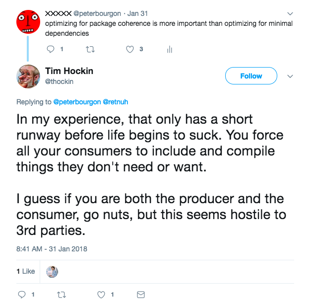
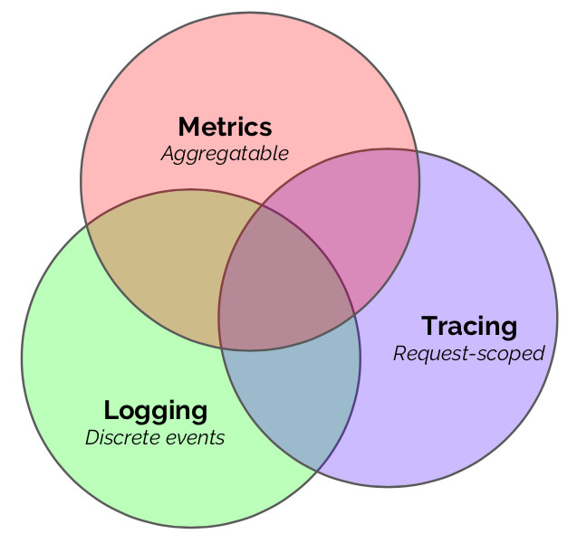
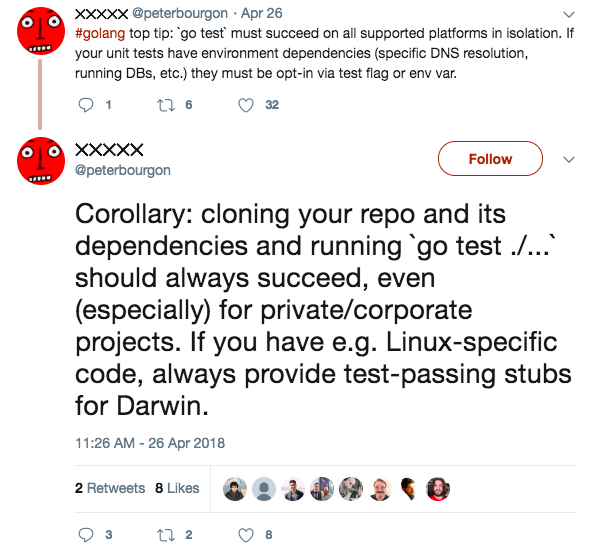
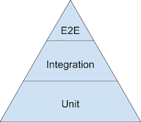

Go: Best Practices for Industrial Programming
Peter Bourgon
GopherCon Europe • June 2018
Setting some context

So I'm actually in a bit of a strange situation right now. And I think everyone who takes the stage here,
or at any conference, is in the same sort of bind.
The inimitable JBD has given
us the professional tip that we should never blindly apply dogmatic advice, and that we should use our
judgment each and every time. Presumably also with that selfsame tip. But I have applied my judgment
to this statement, and I judge it to be true.

Some guy on the internet
has additionally observed that the longer it is you're in the tech industry the more your opinions end
up being
well it depends and
I'm not sure and that these don't quite make for good talks. That also feels true to me—at
least, if you're doing things right. It's my experience that if you find that you're getting more
strongly opinionated as you advance in your career, chances are you're caught in a rut and becoming
an expert beginner. Not great!
Paralysis!
Taken together, these two truths about advice-giving seem to push us into a paralysis. The more experienced
I become, the less sure I am about anything, and the less likely I am to deliver actionable advice
to you, the audience. And the better you are at receiving advice, the less likely you are to believe
what I say. So what am I even doing up here? Should we all go home?
—
To break out of this paralysis I think we can employ a couple of strategies. First, we can ensure that
when we give advice, we place it into the specific
context where it makes sense. If we can define an explicit scope of applicability, we can carve
out a little space for ourselves to have a well-defined opinion.
Strategy 1:
Always provide specific
context
That's what I've tried to do with the title of the talk. I'm speaking today about programming in an industrial
context. By that I mean
Industrial Programming is (maybe)...
- in a startup or corporate environment;
- within a team where engineers come and go;
- on code that outlives any single engineer; and
- serving highly mutable business requirements.
This describes my work environments for most recent memory. I suspect it does for a lot of you, too.
And the best advice for Go in this context is sometimes different than for Go in personal projects,
or large open-source libraries, and so on.
And to speak to JBD's point, I should be careful to always
justify the advice I give, so that you can follow the chain of reasoning yourself, and draw
your own conclusions. I've tried my best to do that in this talk.
Strategy 2:
Always provide sufficient
justification
One thing I see frequently among my colleagues, especially those very new to Go, is an expectation of
a rigid project structure, often decided
a priori at the start of the project. I think this is generally more problematic than helpful.
To understand why, remember the fourth, and maybe most important, property of industrial programming:
Industrial programming ... serves
highly mutable business requirements
Industrial programming serves highly mutable business requirements:
Don't opt in to structure before you need it
The only constant is change, and
the only rule of business requirements
is that they never converge, they only diverge, grow, and mutate. So we should make sure our code accommodates
this fact of life, and not box ourselves in unnecessarily. Our repos, our abstractions, our code
itself should be easy to maintain by being easy to change, easy to adapt, and, ultimately,
easy to delete.
There are a few things that are generally good ideas. If your project has multiple binaries, it's a good
idea to have a cmd/ subdirectory to hold them. If your project is large and has significant non-Go
code, like UI assets or sophisticated build tooling, it might be a good idea to keep your Go code
isolated in a pkg/ subdirectory. If you're going to have multiple packages, it's probably a good
idea to orient them around the business domain, rather than around accidents of implementation. That
is: package user, yes; package models, no. There are a couple of good articles for package design:
Ben Johnson's Standard Package Layout
and
Brian Ketelsen's GopherCon Russia talk
this year had some good advice.
Of course, business domain and implementation are not always
strictly separated. For example, large web applications tend to intermingle transport and core business
concerns. Frameworks like
GoBuffalo
encourage package names like actions, assets, models, and templates. When you know you're dealing with
HTTP exclusively,

there are advantages to going all-in on the coupling.
Tim Hockin also suggests we align packages on dependency
boundaries. That is, have separate packages for e.g. RedisStore,
MySQLStore, etc. to avoid external consumers having to include
and compile support for things they don't need. In my opinion,
this is an inappropriate optimization for packages with a closed
set of importers, but makes a lot of sense for packages widely
imported by third parties, like Kubernetes, where the size of
the compilation unit can become a real bottleneck.
So there's a spectrum of applicability. I think the best general
advice is to only opt-in to a bit of structure once you feel the
need, concretely. Most of my projects still start out as a few
files in package main, bundled together at the root of the repo.
And they stay that way until they become at least a couple
thousand lines of code. Many, even most, of my projects never
make it that far. One nice thing about Go is that it can feel
very lightweight; I like to preserve that as long as possible.
I feel like I say this in almost every talk I give or article I
write, but I wouldn't want to break the streak now, so let me
repeat myself:
Flags are the best way to configure your program,
because they're a self-documenting way to describe the configuration surface area of your
program at runtime.
Flags are the best way to configure your program
They self-document the configuration surface area at runtime
This is particularly important in industrial contexts, where whoever is operating a service may not be
its original author. If running your program with the -h flag provides a complete list of the knobs
and switches that controls its behavior, then it's very easy for an on-call engineer to adjust something
during an incident, or for a new engineer to get it running in their dev environment. Much easier
than having to hunt down a set of relevant environment variables in (probably outdated) documentation,
or figure out the syntax and valid key names of a config file format.
This doesn't mean never use env vars or config files. There are
good reasons to use either or both
in addition to
flags. Env vars can be useful for connection strings and
non-secret auth tokens, especially during dev. And config files
are great for declaring verbose configs, as well as being the
only secure way to get secrets into a program. (Both env vars
and flags can be inspected by other users of the system at
runtime.) Just ensure that explicit commandline flags, if given,
take highest priority.
Env vars and config files are useful
in addition to flags
Avoid using them as the only
way to configure your program
—
I've speculated in the past about a theoretical configuration
package which mandated the use of flags for config, but also
allowed env vars and config files in various formats, on an
opt-in basis. I have strong opinions about what that package
should look like, but haven't yet spent the time to implement
it. Maybe I can put this out there as a package request?
var fs myflag.FlagSet
var (
foo = fs.String("foo", "x", "foo val")
bar = fs.String("bar", "y", "bar val", myflag.JSON("bar"))
baz = fs.String("baz", "z", "baz val", myflag.JSON("baz"), myflag.Env("BAZ"))
cfg = fs.String("cfg", "", "JSON config file")
)
fs.Parse(os.Args, myflag.JSONVia("cfg"), myflag.EnvPrefix("MYAPP_"))
Industrial programming means writing code once and maintaining it into perpetuity. Maintenance is the
continuous practice of reading and refactoring. Therefore, industrial programming overwhelmingly
favors reads, and on the spectrum of
easy to read vs. easy to write,
we should bias strongly towards the former.
Prefer inversion-of-control dependency injection
Avoid dependency injection frameworks or containers
Dependency injection is a powerful tool to optimize for read comprehension. And here I definitely don't
mean the dependency container approach used by
facebook-go/inject or
uber/dig, but rather the much simpler practice of enumerating dependencies as parameters to types
or constructors.
Avoid ✗
Here's an example of container-based dependency injection that recently made the rounds:
func BuildContainer() *dig.Container {
container := dig.New()
container.Provide(NewConfig)
container.Provide(ConnectDatabase)
container.Provide(NewPersonRepository)
container.Provide(NewPersonService)
container.Provide(NewServer)
return container
}
func main() {
container := BuildContainer()
if err := container.Invoke(func(server *Server) {
server.Run()
}); err != nil {
panic(err)
}
}
The func main is compact, and BuildContainer has the appearance of being pithy and to-the-point. But
the Provide method requires reflection to interpret its arguments, and Invoke gives us no clues
as to what a Server actually needs to do its job. A new employee would have to jump between multiple
contexts to build a mental model of each of the dependencies, how they interact, and how they're
consumed by the server. This represents a bad tradeoff of read- vs. write-comprehension.
Compare against a slightly adapted version of the code that this example is meant to improve:
Prefer ✔︎
func main() {
cfg := GetConfig()
db, err := ConnectDatabase(cfg.URN)
if err != nil {
panic(err)
}
repo := NewPersonRepository(db)
service := NewPersonService(cfg.AccessToken, repo)
server := NewServer(cfg.ListenAddr, service)
server.Run()
}
The func main is longer, but in exchange for that length we get unambiguous explictness. Each component
is constructed in dependency-order, with errors handled inline. Each constructor enumerates its
dependencies as parameters, allowing new code readers to quickly and easily build a mental model
of the relationship graph between components. Nothing is obscured behind layers of indirection.
If a refactor requires a component to acquire a new dependency, it simply needs to be added to the constructor.
The next compile will trigger errors that precisely identify the parameter lists need to be updated,
and the diff in the resulting PR will clearly show the flow of the dependency through the graph.
I claim this strictly superior to the previous method, where relationships are much harder to extract
from the code as written, and much of the failure detection is deferred until runtime. And I claim
it's increasingly superior as the size of the program (and the size of the func main) grows, and
the benefits of plain and explicit initialization compound.
—
When we talk about read comprehension, I like to reflect on
what I think is the single most important property of Go, which is that
it is essentially non-magical.
With very few exceptions, a straight-line reading of Go code
leaves no ambiguity about definitions, dependency relationships,
or runtime behavior.
This is great.
But there are a few ways that magic can creep in. One
unfortunately very common way is through the use of global
state. Package-global objects can encode state and/or behavior
that is hidden from external callers. Code that calls on those
globals can have surprising side effects, which subverts the
reader’s ability to understand and mentally model the program.
Accordingly, and in deference to read-optimization and
maintenence costs, I think the ideal Go program has little to no
package global state, preferring instead to enumerate
dependencies explicitly, through constructors. And since the
only job of func init is to initialize package global state, I
think it's best understood as a serious red flag in almost any
program. I've programmed this way for many years, and I've only
grown to appreciate and advocate for the practice more strongly
in that time.
So,
my theory of modern Go:
My theory of modern Go
- No package level variables
- No func init
The single biggest cause of frustration
Incorrect or overly-complex designs for starting, stopping,
and inspecting goroutines is the single biggest cause of
frustration faced by new and intermediate Go programmers,
in my experience.
I think the problem is that goroutines are, ultimately, a very low-level
building block, with few affordances for the sort of higher-order tasks that
most people want to accomplish with concurrency.
We say things like "never start a goroutine without knowing how it will stop,"
but this advice is somewhat empty without a concrete methodology.
And I think many tutorials and lots of example code, even in
otherwise good references like The Go Programming Language book,
do us a disservice by demonstrating concurrency concepts with
fire-and-forget goroutines, global state, and patterns that
would fail even basic code review.
Most goroutines I see launched by my colleagues are not
incidental steps of a well-defined concurrent algorithm.
They tend to be structural, managing long-running things with indistinct
termination semantics, often started at the beginning of a program.
I think these use cases need to be served with stronger conventions.
I think this is because goroutines are often too low-level.
What if the go keyword had different orthotics?
Imagine for a moment that the orthotics of the go keyword were slightly different.
What if we couldn't launch a goroutine without also necessarily providing a function
to interrupt or stop it? In effect, enforcing the convention that goroutines
shouldn't be started unless we know how they'll be stopped.
This is what I've stumbled over with
package run,
extracted from a larger project I was working on last year.
Here's the most important method, Add:
func (g *Group) Add(execute func() error, interrupt func(error))
Add queues a goroutine to be run, but also tracks a function that will
interrupt the goroutine when it needs to be killed. That enables
well-defined termination semantics for the group of goroutines as a whole.
For example, I use it most often when I have multiple server components
that should run forever, and then Add a goroutine to trap ctrl-C and tear
everything down.
ctx, cancel := context.WithCancel(context.Background())
g.Add(func() error {
c := make(chan os.Signal, 1)
signal.Notify(c, syscall.SIGINT, syscall.SIGTERM)
select {
case sig := <-c:
return fmt.Errorf("received signal %s", sig)
case <-ctx.Done():
return ctx.Err()
}
}, func(error) {
cancel()
})
If you're familiar with
package errgroup,
this is similar at a high level, but the devil's in the details:
errgroup implicitly assumes all execute funcs will respond to
the parent context provided to the group, and has no affordance
to make that explicit.
There was
a recent clickbaity blog post
that claimed the "go statement considered harmful," and
advocated for a construct it called a nursery, of
lifecycle-bound threads. Both package run and package errgroup
are slightly different implementation-interpretations of this
nursery concept.
So this is one form of higher-order structure.
But there are plenty of others!
For example, did you know Go had futures?
It's just a little bit more verbose than it might be in other languages.
future := make(chan int, 1)
go func() { future <- process() }()
result := <-future
Another way of pronouncing "future" is "async/await".
c := make(chan int, 1)
go func() { c <- process() }() // async
v := <-c // await
We also have scatter-gather, which I use all the time,
when I know precisely how many units of work I need to process.
// Scatter
c := make(chan result, 10)
for i := 0; i < cap(c); i++ {
go func() {
val, err := process()
c <- result{val, err}
}()
}
// Gather
var total int
for i := 0; i < cap(c); i++ {
res := <-c
if res.err != nil {
total += res.val
}
}
A good Go programmer will have a strong command of several of
these higher-order concurrency patterns. A great Go programmer
will be proactive in teaching those patterns to their
colleagues.
I largely agree with what Charity told us earlier in the
program. In particular, I agree that a core invariant of our
distributed industrial systems is that there's simply no cost-effective way
to do comprehensive integration or smoke testing. Integration or
test environments are largely a waste;
more environments will not make things easier.
For most of our systems, good observability is simply more
important than good testing, because good observability enables
smart organizations to focus on fast deployment and rollback,
optimizing for mean time to recovery (MTTR) instead of mean time
between failure (MTBF).
The question for us is: what does a properly observable system
in Go look like? I guess there's no single answer, no package I
can tell you to import to solve the problem once and for all.
The observability space is fractured, with many vendors
competing for their particular worldview. There's a lot to be
excited about, but the dust hasn't settled on winners yet. While
we wait for that to happen, what can we do in the meantime?
The three pillars of observability

If we lived in a more perfect world, it wouldn't matter. If we
had a perfect observability data collection system, where all
interpretation could be done at query-time with zero cost, we
could emit raw observations to it, with infinite detail, and
be done with it. But what makes the field interesting, or
challenging, is of course that no such data system exists. So
we’ve had to make engineering decisions, compromises, imbuing
certain types of observations with semantic meaning, to enable
specific observability workflows.
Metrics, logging, and tracing are emergent patterns of
consumption of observability data, which inform the way we
produce, ship, and store the corresponding signals. They’re the
product of an optimization function, between how operators want
to be able to introspect over their systems, and the capability
of technology to meet those demands at scale. There may be
other, yet-undiscovered patterns of consumption, likely driven
by advances in technology, which will usher in a new era and
taxonomy of observability. But this is where we’re at today, and
for the forseeable future. So let's see how to best leverage
each of them in Go.

Metrics are counters, gauges, and histograms, whose observations
are statistically combined and reported to a system that allows
fast, real-time exporation of aggregate system behavior. Metrics
power dashboards and alerts.
Most metric systems provide Go client libraries by this point,
and the standard exposition formats, like StatsD, are pretty
well understood and implemented. If your organization already
has institutional knowledge around a given system, standardize
on it; if you're just getting started or looking to converge on
one system, Prometheus is best-in-class.
What isn't good enough anymore are host- or check-based systems
like Nagios, Icinga, or Ganglia. These keep you trapped in
monitoring paradigms that stopped making sense a long time ago,
and actively impede making your system observable.

Logs are streams of discrete events reported at full fidelity to
a collection system, for later analysis, reporting, and
debugging. Good logs are structured and permit flexible post-hoc
manipulation.
There are lots of great logging options in Go these days. Good
logging libraries are oriented around a logger interface, rather
than a concrete logger object. They treat loggers as
dependencies, avoiding package global state. And they enforce
structured logging at callsites.
Logs are abstract streams, not concrete files, so avoid loggers
that write or rotate files on disk; that's the responsibility of
another process, or your orchestration platform. And logging can
quickly dominate runtime costs of a system, so be careful and
judicious in how you produce and emit logs. Capture everything
relevant in the request path, but do so thoughtfully, using
patterns like decorators or middlewares.

Tracing deals with all request-scoped performance data,
especially as that data crosses process and system boundaries in
a distributed system. Tracing systems organize metadata into
tree structures, enabling deep-dive triage sessions into
specific anomalies or events.
Tracing implementations these days are centered around
OpenTracing, a client-side API standard implemented by
concrete systems like Zipkin, Jaeger, Datadog, and others.
There's also interesting work being done in OpenCensus,
which promises a more integrated environment.
Tracing needs to be comprehensive if it's going to be useful,
and of all of the pillars of observability it has the strictest
set of domain objects and verbs. For those reasons the costs of
properly implementing tracing are very high, and may only make
sense to start working on when your distributed system is quite
large, perhaps beyond several dozen microservices.
—
Each pillar of observability has different strengths and weaknesses.
I think we can compare them along different axes:
CapEx, the initial cost to start instrumenting and collecting the signals;
OpEx, the ongoing cost to run the supporting infrastructure;
Reaction, how good the system is at detecting and alerting on incidents; and
Investigation, how much the system can help to triage and debug incidents.
My subjective opinions follow:
|
Metrics |
Logging |
Tracing |
| CapEx |
Medium |
Low |
High |
| OpEx |
Low |
High |
Medium |
| Reaction |
High |
Medium |
Low |
| Investigation |
Low |
Medium |
High |
In terms of CapEx, logging systems are the easiest to get
started, and adding log instrumentation to your code is easier
and more intuitive than the alternatives. Metrics are a bit more
involved to add, but most metrics collection systems are still
relatively self-contained and pretty easy to deploy. Tracing, in
contrast, is time-intensive to install across your fleet, and
the tracing collection systems are typically large and require
some specialized database knowledge.
In terms of OpEx, it's my experience that keeping a logging
system online takes disproportionate effort, often being just as
hard or harder than the corresponding production
systems—made more difficult by the tendency for most
organizations to indiscriminately over-log. Tracing systems
benefit from the upfront costs and generally get on OK with
aggressive ingest sampling and regular database maintenance.
Metrics systems, in constrast, benefit from the natural data
compression that occurs from statistical aggregation, and have
generally very low maintenance costs.
In terms of reactive capability, metrics systems are explicitly
designed to serve dashboard and alert use cases, and excel here.
Logging systems frequently have tooling to perform aggregates or
roll-ups that can drive dashboards and alerts, with a bit of
work. And tracing systems generally don't have an ability to
detect or signal on anomalies.
When it comes to investigation, however, the tables are turned.
Metric systems lose data fidelity by design, and usually provide
no good way to dig into the root cause of a problem after it's
detected. Logging systems do much better, especially if you do
structured logging and a logging system with a rich query language.
And tracing is essentially designed for deep dives on specific
requests or request-classes, sometimes being the only way to
identify complex maladaptive behaviors.
—
The lesson here is that no single observability paradigm
will solve all of your observability needs;
they're all part of a complete observability breakfast.
From their unique characteristics I think we can derive some general
advice:
- First, invest in basic, comprehensive metrics, to power
a uniform set of dashboards and alerts for your components.
- Next, invest in deep, high-cardinality, structured logging for
incident triage and debugging.
- Finally, once you're at a
large-enough scale and have well-defined production readiness
standards, investigate distributed tracing.
- First, metrics
- Next, structured logging
- Finally, distributed tracing

Although observability probably trumps integration testing for
large distributed systems, unit and limited integration testing
is still fundamental and necessary for any software project. In
industrial contexts especially, I think its greatest value is
providing a sort of sanity-check layer to new maintainers that
their changes have the intended scope and effect.
It follows that tests should optimize for ease-of-use. If an
entry-level developer can't figure out how to run your project's
tests immediately after cloning the repo, there is a serious
problem. In Go, I think this means that running plain go test in
your project with no additional set-up work should always
succeed without incident. That is, most tests should not require
any sort of test environment, running database, etc. to function
properly and return success. Those tests that do are integration
tests, and they should be opt-in via test flag or environment
variable:
func TestComplex(t *testing.T) {
urn := os.Getenv("TEST_DB_URN")
if urn == "" {
t.Skip("set TEST_DB_URN to run this test")
}
db, _ := connect(urn)
// ...
}

The testing pyramid
is good general advice, and
suggests that you should focus most of your efforts on
unit testing. In my experience, the ideal ratios are even more extreme than
the pyramid suggests: if you have good production observability, as much as
80–90% of your testing effort should be focused toward unit tests.
In Go, we know that
good unit tests are table-driven,
and leverage the fact that your components
accept interfaces and return structs
to provide fake or mock implementations of dependencies,
and
test only the thing being tested.
I like to reference this talk as frequently as possible:
Mitchell Hashimoto's
Advanced Testing with Go
from last year's GopherCon is probably the single best source of
information about good Go program design in industrial contexts
I've seen to date. If your team writes Go, it's essential
background material.
There's not much more to say on the subject. The relative
stability of testing best practices over time is a welcome
reprieve. As before and as always: gunning for 100% test
coverage is almost certainly counterproductive, but 50% seems
like a good low watermark; and avoid introducing testing DSLs or
"helper packages" unless and until your team gets explicit,
concrete value from them.
When we talk about testing, we talk about mocking dependencies
via interfaces, but we often don't really describe how that
works in practice. I think it's important to observe that the Go
type system is not nominal, but rather
it is structural.
Looking at interfaces as a way to classify implementations is the
wrong approach; instead, look at interfaces as a way to identify
code that expects common sets of behaviors. Said another way,
interfaces are consumer contracts, not producer (implementor)
contracts—so, as a rule, we should be defining them at
callsites in consuming code, rather than in the packages that
provide implementations.
The Go type system is structural, not nominal
Interfaces belong with consumers, not implementers
How much interface do you need? Well, there's a spectrum. As
much as makes sense at your callsites, especially with the aim
to help testing. At one extreme, we could model every dependency
to every function with a tightly-scoped interface definition. In
limited circumstances this may make sense! For example, if your
components are coarse-grained, well-established, and unlikely to
change in the future.
Define interfaces at fault lines
- Between func main and the rest of the program
- At package APIs
But especially in industrial contexts, it's more likely that
you'll have a mix of abstractions, which are fluctuating over
time. In this case, you'll probably want to try to define
interfaces at "fault lines" in your design. Two natural boundary
points are between func main and the rest of your code, and
along package APIs. Defining dependency interfaces there is a
great place to start, as well as a great place to start thinking
about defining unit tests.
Go 1.7 brought us package context, and since then, it's been
steadily infecting our code. This isn't a bad thing!
Contexts are a well-understood and ubiquitous way to
manage goroutine lifecycles,
which is a big and hard problem. In my experience this is their
most important function. If you have a component that blocks for
any reasons—typically network I/O, sometimes disk I/O,
maybe due to user callbacks, and so on—then it should
probably take a context as its first parameter.
The pattern is so ubiquitous, I've started to design this into
my server types and interfaces from the beginning. Here's an
example from a recent project that connected to Google Cloud
Storage:
Contexts for lifecycle management
A good idea
// reportStore is a thin domain abstraction over GCS.
type reportStore interface {
listTimes(ctx context.Context, from time.Time, n int) ([]time.Time, error)
writeFile(ctx context.Context, ts time.Time, name string, r io.Reader) error
serveFile(ctx context.Context, ts time.Time, name string, w io.Writer) error
}
Writing components to be context-aware for lifecycle semantics
is straightforward: just make sure your code responds to
ctx.Done.
Using the value propegation features of contexts has
proven to be a bit trickier.
The problem with context.Value is that the key and value are
untyped and not guaranteed to exist, which opens your program up
to runtime costs and failure modes that may otherwise be
avoidable.
My experience has been that developers over-use context values
for things that really ought to be regular dependencies or
function parameters.
Contexts for value propegation
Only for request-scoped data
So, one essential of thumb: only use context.Value for data that
can't be passed through your program in any other way. In
practice, this means only using context.Value for
request-scoped information, like request IDs, user
authentication tokens, and so on. If the information is
available when the program starts, like a database handle or
logger, then it shouldn't be passed through the context.
Again, the rationale for this advice boils down to
maintainability. It's much better if a component enumerates its
requirements in the form of a constructor or function parameter,
checkable at compile time, than if it extracts information from
an untyped, opaque bag of values, checkable only at runtime. Not
only is the latter more fragile, it makes understanding and
adapting code more difficult.
I've been doing this best practice series for six years now,
and while a few tips have come and gone,
especially in response to emerging idioms and patterns,
what's remarkable is really how little the foundational knowledge
required to be an effective Go programmer has changed in that time.
By and large, we aren't chasing design trends.
We have a language and ecosystem that's been remarkably stable,
and I'm sure I don't just speak for myself when I say I really appreciate that.
Go has changed remarkably little
I really appreciate that!
I think it's great to orient ourselves among each other at
conferences like this one. But I think the best thing we can do
here is build empathy for each other. If we do our job right, as
the number of Go programmers continues to grow, the community
will become increasingly diverse, with different workflows,
contexts, and goals. I'm happy to have presented some experience
reports from my own journey with Go, and I'm excited to hear and
understand all of yours. Thanks a bunch!
These were some of my experiences with Go
I'm excited to hear all of your experiences, too!
Thanks for listening!